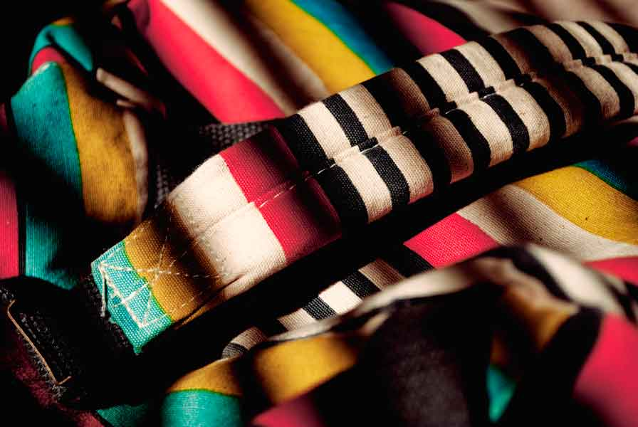
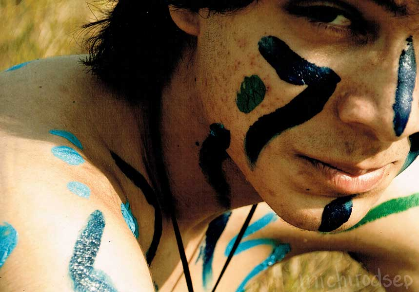
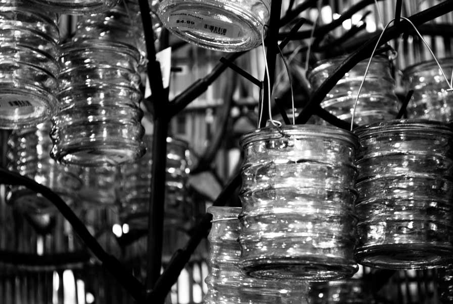
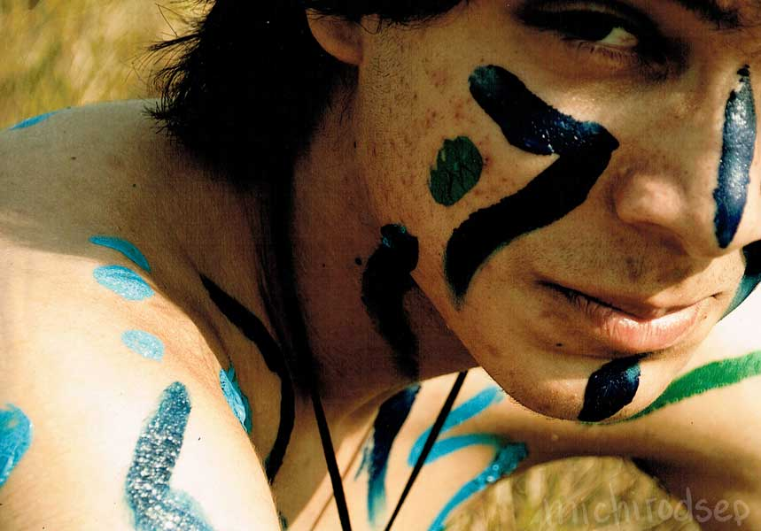
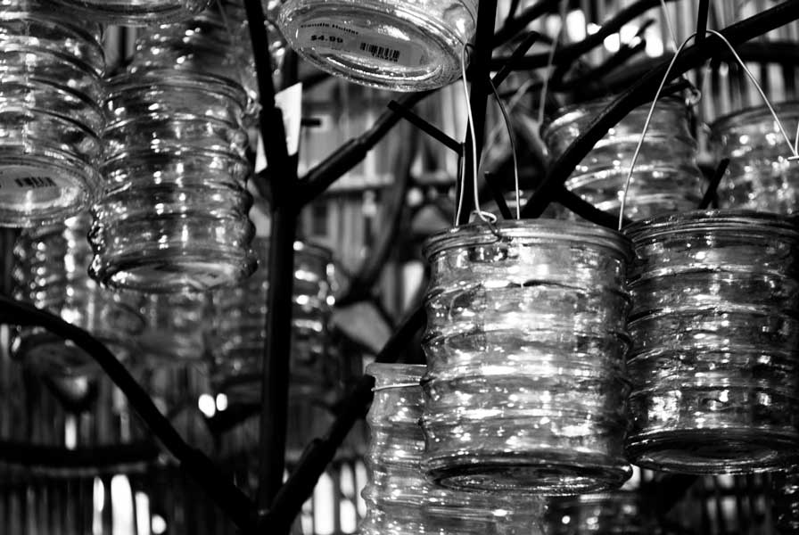
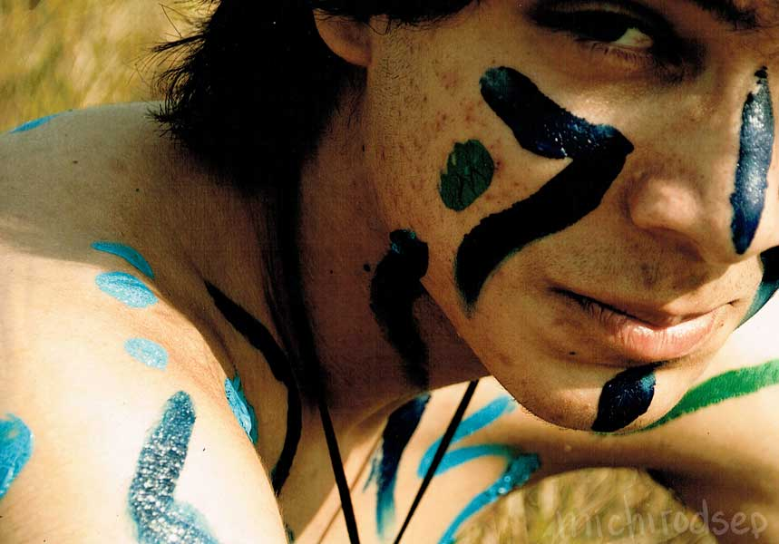
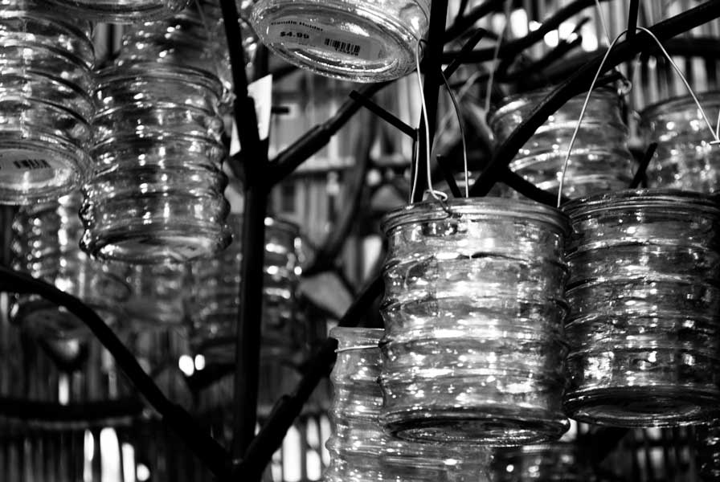

Photography
In a search for what something new, I've dabbled with quite a few interests. Photography was one of those hobbies that really held my interest when I found a way to view the world through a new lens. I'm inspired by the world that exists around us, exploring it and looking for a new perspective we don't always see.
Here are some of the muses that taught me to see differently.


 




